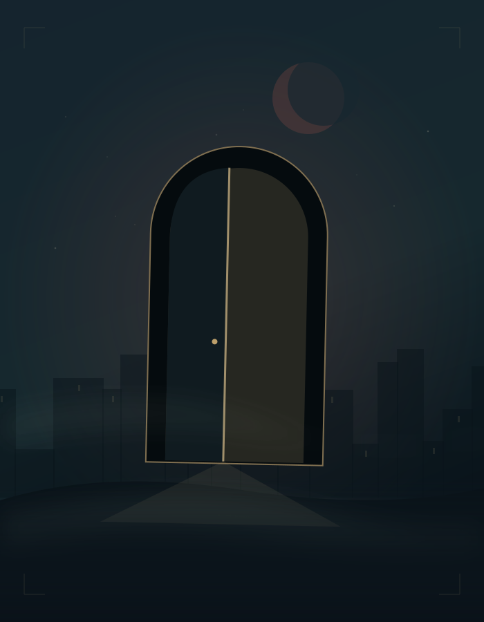

A WORLD BETWEEN THE PAGES
Step beyond
the grey.
Gaslit streets. Unspoken secrets. A crimson moon.
Your books, reimagined as a place to disappear into.
09 VOLUMES1,430 CHAPTERS + EXTRASALL HERE. ALL OFFLINE.

EVERY DOOR IS A BEGINNINGTurn the page. Take your time.
51° 30′ N · SOMEWHERE BEYONDTHE LORD OF THE MYSTERIES
A shelf of other worlds.
Nine volumes. One continuous journey. Arranged just as they should be.
From your personal PDF collectionA little atmosphere. A lot of story.
Every chapter has its own quiet illustration, inspired by its title and opening lines. Silhouettes, not spoilers. The words still come first.
Opening the next door…
This chapter could not be opened.
Keep the data folder alongside index.html, or read its source PDF below.
0% through chapter